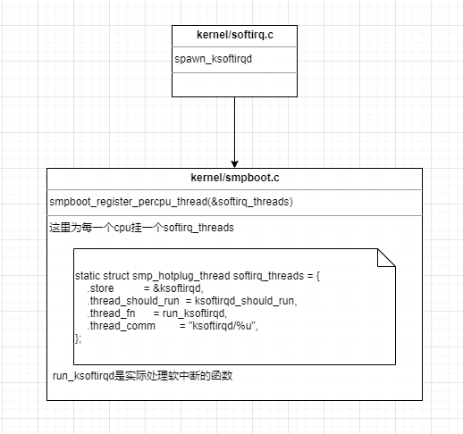
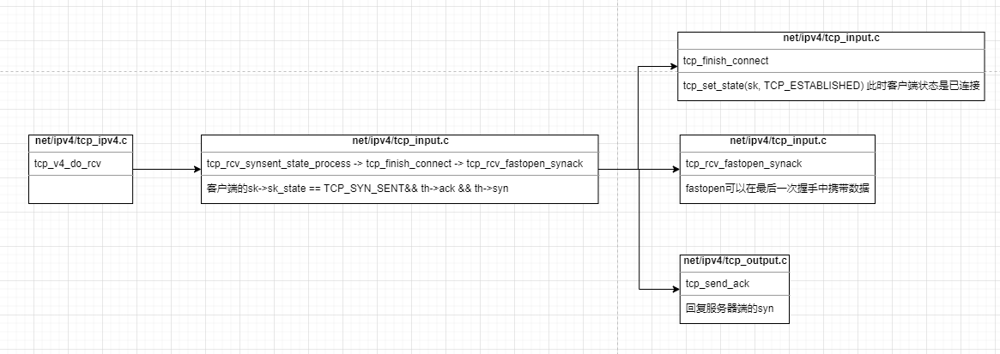

前言
随着互联网的兴起，分布式技术发展，越来越多的服务开始通过网络进行交互，Linux因其强大的网络功能，在服务器端作为底层操作系统长盛不衰，了解Linux Kernel级别的网络功能实现，有助于在Linux Kernel级别诊断应用网络问题，搭建更加牢固可靠的网络基础设施，为服务端应用更好的服务。
因C语言能力浅薄，独自阅读Linux Kernel代码吃力，本文借鉴于张彦飞的《深入理解Linux网络》，让飞哥领路，一起看一下网络收发包是如何在Linux Kernel中实现的。
准备工作
Linux操作系统内核启动，为收发包功能做准备工作，这里只看网络收发包相关初始化。
initcall
按照从左到右的顺序，看一下相关初始化的代码实现。
ksoftirq

ksoftirqd中的run_ksoftirqd是实际的软中断处理方法，当进行网络收发包时，会根据相应的中断类型，调用对应的处理函数。
协议栈
从上面流程中可以看出，协议栈的初始化，并未进行任何收发包的相关操作，只是分别初始化了一些数组：
- inet_protos，其中包含了传输层（本例只分析TCP）tcp_protocol的handler方法。
- net_families，其中包含了socket创建时使用的inet_family_ops的create方法。
- ptype_base，其中包含了网络层处理函数func。
这些数组的实现，能够很容易的根据协议、协议簇、类型，找到数组中的元素，从而调用不同的实现方法。
网络子系统
softnet_data的数据结构如下：
1 | /* |
NET_TX_SOFTIRQ代表收包的软中断，对应net_tx_action的处理函数，NET_RX_SOFTIRQ代表发包的软中断，对应net_rx_action的处理函数。
网卡驱动
以igb网卡为例，看一下驱动的注册过程。驱动在操作操作系统安装后，需要通过module_init向内核通报自己的信息（包括名称和操作方法）。
igb_driver的信息如下：
1 | static struct pci_driver igb_driver = { |
Linux系统启动时，扫描PCI，找到PCI设备（设备识别），如果该设备已经注册驱动，则调用驱动的probe函数，probe方法执行的目的是为了让设备处于ready的状态。
网卡的驱动设备都必须实现probe方法。
网卡启动
网卡启动之后，主要通过igb_open的调用，实现了网卡多队列的硬中断处理函数的注册，同时，在回调函数igb_msix_ring中，明确了使用网卡驱动中的igb_poll函数进行数据的获取。
代码示例
Linux Kernel完成准备工作后，下面通过一段简单的C语言服务器、客户端代码实例（暂不考虑性能因素）。沿着这一段基础的代码实现，看一下Kernel的TCP协议收发包是如何工作的。
服务端
1 | int main() { |
客户端
1 | int main() { |
系统调用分析
按照如下流程来看一下简单的客户端和服务端系统调用分别都做了哪些工作。
- 服务器端服务启动，监听端口，等待数据到达（涉及socket、bind、listen函数）。
- 客户端连接服务端发送数据，等待返回（涉及socket、connect、send函数）。
- 服务端接收连接，并读取客户端数据，然后返回数据到客户端（涉及accept、recv、send函数）。
- 客户端读取服务端返回的数据，关闭连接（涉及recv、close函数）。
socket
socker的创建过程，客户端和服务端想要完成通信，都必须创建自己的socket，然后使用返回的文件描述符完成后续的操作。
通过socket的创建，内核建立其如下数据结构：
bind
这里主要进行端口检查，确定所使用的端口。

listen
listen的过程主要初始化连接队列，根据系统参数和用户参数，确定队列的长度。
在内核中，经常看到struct sock、tcp_sock、inet_connection_sock、inet_sock、sock之间的强制转化，他们之间的嵌套关系如下：
connect/send/recv
在connect过程中，会进行TCP三次握手，建立连接，其中也会涉及到send和recv的系统调用处理流程。
通过socket创建，bind绑定端口，listen开启监听，服务器端已经做好了接收连接的准备，客户端也通过socket创建得到了socket的文件描述符，下一步通过connect建立连接，然后进行数据发送。
数据包发送
上面构造了syn的包，并直接发送，当配额不足的时候，是需要走软中断发送的。在网络子系统初始化的时候，注册了NET_TX_SOFTIRQ中断的处理函数net_tx_action。
可以看到在软中断处理数据包发送中，会回调__qdisc_run最后都通过调用网卡驱动的发送方法完成发送，数据发送完成后，网卡会触发硬中断，产生NET_RX_SOFTIRQ的软中端，并通过该中断的函数中的igb_clean_tx_irq，清理数据。
此时syn包离开了客户端，经由网络发送给服务器端，下面来看一下服务器端收包过程。
数据包接收
网卡启动一节中，注册了硬中断的处理函数igb_msix_ring，数据包到达网卡后，网卡会通过硬中断通知cpu，此时igb_msix_ring执行。
ksoftirq进程通过ksoftirqd_should_run方法判断是否有软中断写入，当软中断写入时，执行run_ksoftirqd，h->action(h) 调用中断对应的处理函数，网络子系统中，提到过NET_RX_SOFTIRQ的中断处理函数是net_rx_action。
数据包经由网卡驱动、网络层的处理，即将进入传输层。传输层收到syn包后，需进行三次握手的过程，现在已经清楚了数据包的接收和发送，后续数据包的收发在网卡、网卡驱动、网络层的处理是一样的，重点看三次握手传输层的处理。
三次握手
服务端构建了syn+ack包后，发送给客户端，服务端的发送、客户端的接收不再赘述，客户端收到syn+ack，传输层也是从tcp_v4_rcv开始，只不过客户端的状态是TCP_SYN_SENT。

客户端发送ack，给服务器端，服务器端传输层的处理流程。
close
四次挥手的处理与三次握手整体流程基本一致，都是从tcp_v4_rcv进入到传输层，然后根据当前所处的状态以及接收到的数据包做分别的处理。